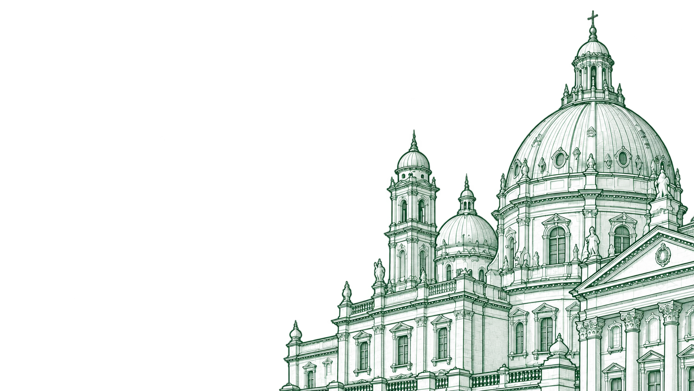
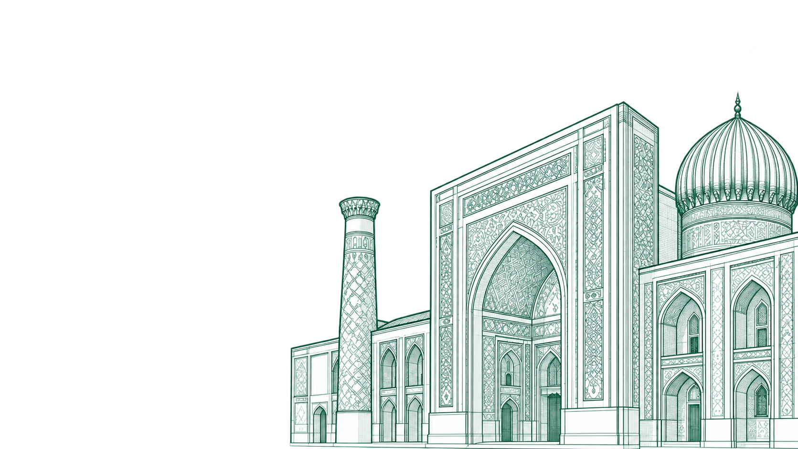
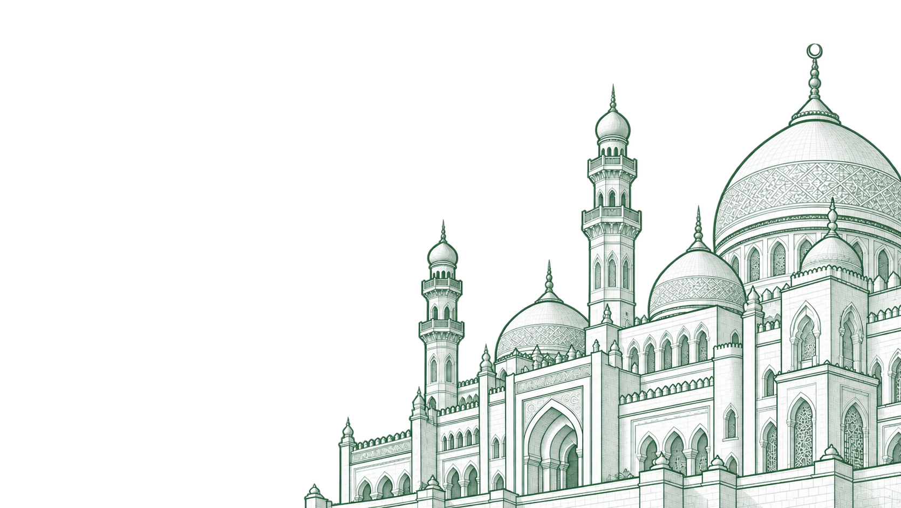

A Vienna-based integrator of sustainable infrastructure
We connect clients and project ideas with suitable technologies, international partners and local expertise. Our work focuses on solution selection, project development and cooperation between manufacturers, engineers, research organisations and financial institutions.
Our story
The Shift
From timber trade to sustainable solutions integration
Timber and natural materials remain our foundation. Over two decades in international timber markets we have come to know the whole chain, from raw material and production to certified, finished buildings, and built relationships with manufacturers and partners around the world.
Sustainable solutions integration is the next logical step on that path, not a change of direction. Today we go further: we connect sustainable construction with energy, water and resource-efficient solutions, together with the right partners and specialists for each project.
-
BUILD'N GREEN 2026 — Circularity in ActionVienna, Austria · 2026 -
CEE Sustainable Finance SummitPrague, Czech Republic · 2026 -
CEE Sustainable Finance SummitPrague, Czech Republic · 2026 -
Eighth GEF AssemblySamarkand, Uzbekistan · 2026 -
ExporttagVienna, Austria · 2026 -
ExporttagVienna, Austria · 2026 -
Monaco Smart and Sustainable Marina RendezvousMonaco · 2026 -
Qingdao Port TourQingdao, China · 2026 -
Working meeting with Prof. Wolfgang Winter (TU Wien)Vienna, Austria · 2026 -
Dubai Wood ShowDubai, UAE · 2025 -
Dubai Wood ShowDubai, UAE · 2025 -
Vietnam WoodHo Chi Minh City, Vietnam · 2025 -
Photo from UzbekistanUzbekistan · 2025

Message from the Founder
Sustainability is personal
I was born and raised in the Siberian taiga, near Lake Baikal. There, respect for nature and for wood is not a slogan but life itself, and it shaped the Siberian character I still carry: directness, resilience and the habit of finishing what we start.
For me, sustainable development is not an abstract goal. It is the environment in which our children grow up and our parents grow old: the schools where they learn, the homes where they feel safe, the places where they are cared for.
After more than two decades in the timber industry, I want to bring Austrian technologies and the right partners to the projects that need them, so that these places are healthy, lasting and kind to the land they stand on.
- Name
- Anna Holz
- Position
- Founder, IM HOLZ Nova
- Award
- Businesswoman of the Year 2025
Runner-Up, Dubai WoodShow
-
Monaco Smart and Sustainable Marina RendezvousMonaco · 2026 -
Dubai Wood ShowDubai, UAE · 2025
Four Pillars
How we work
Our integration approach rests on four principles: suitable technologies and expertise, local needs and knowledge, international cooperation, and sustainability assessed in the context of each project.
-
Technologies & Specialist Expertise
We help identify options across building systems, energy, water and resource efficiency. Austrian and other international expertise can contribute where appropriate; suitability is assessed with qualified specialists for each project.
-
Local People & Culture
Local conditions shape the brief. We seek dialogue with clients, communities, institutions and local professionals so proposed solutions reflect climate, operation, maintenance and ways of life. Knowledge exchange is developed with relevant partners.
-
Collaboration
We develop cooperation between manufacturers, engineers, research institutions, clients, public authorities and potential funders. Each initiative requires its own partner mix, agreed responsibilities and basis for participation.
The IM HOLZ Model -
Sustainability
We help translate sustainability priorities into questions a project can assess: resource use, environmental impact, indoor conditions and long-term usefulness. Relevant specialists determine the evidence, standards and assessment methods needed for the proposed solutions.
Our approach
Where We Work
From Vienna to growing markets
Vienna is our base for developing international cooperation around sustainable solutions. Our trade background and professional exchanges help us explore where technologies and expertise could respond to local needs.
-

Home base
Austria & Europe
Our base in Vienna. EU standards and traceable supply chains give projects a secure footing.
-

Pilot projects
Central Asia
The first pilot schools are in preparation: a fast-growing region with strong demand for schools and healthcare.
-

Industry events
Middle East
An active construction market with growing interest in low-carbon building.
-
Market partnerships
Asia
Large timber markets and trade routes, from Ho Chi Minh City to Qingdao.
Our Projects
One philosophy, different projects
These concept-stage initiatives illustrate our integration approach: bringing relevant technologies and partners around a shared need. Partnerships, feasibility and financing remain to be developed for each initiative.
-
Concept stage
A House of Austrian Technologies for Vienna
Not a classic showroom but a place where people work, meet and receive delegations, and where Austrian technologies can be experienced first-hand in everyday use.
Read more -
Concept stage
CA Smart School concept in Uzbekistan
A school concept exploring engineered timber alongside energy, ventilation and other systems for Central Asian conditions. Technical feasibility, local adaptation, partners and financing would be developed before a pilot could proceed.
Read more


Insights
Latest from the field
Trade fairs, conversations and projects: what we are working on and who we are meeting along the way.
All insights